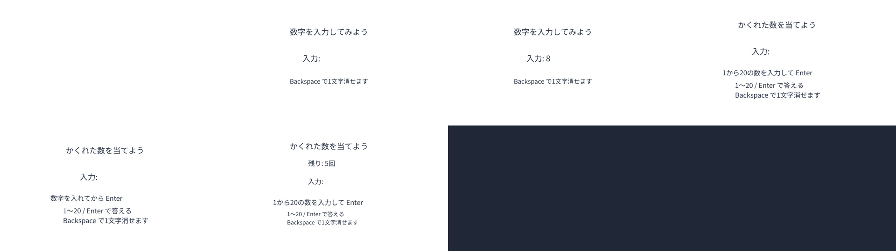
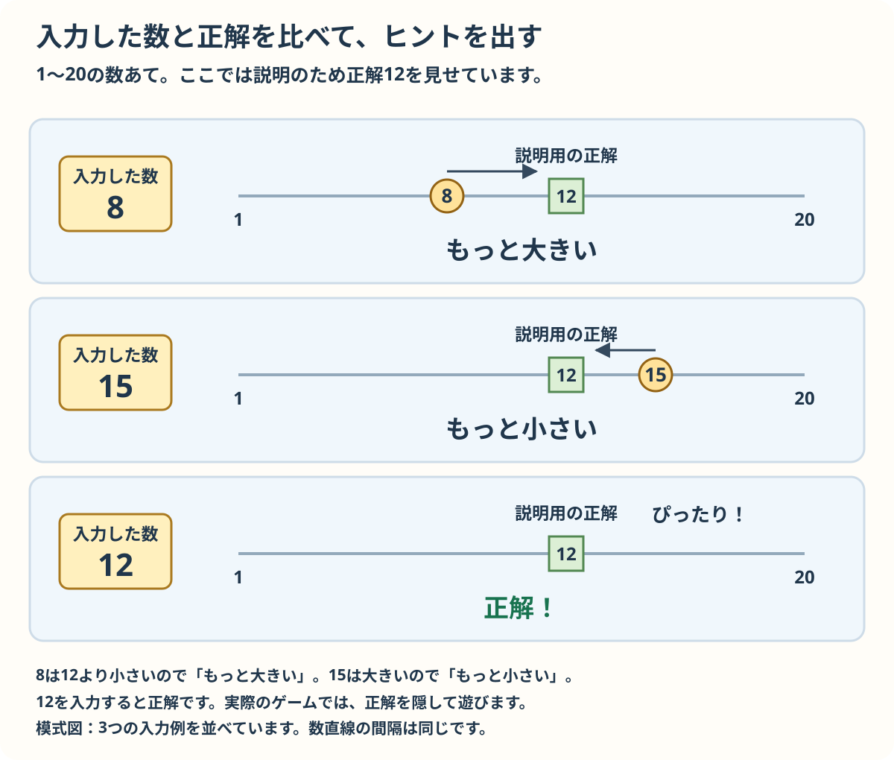
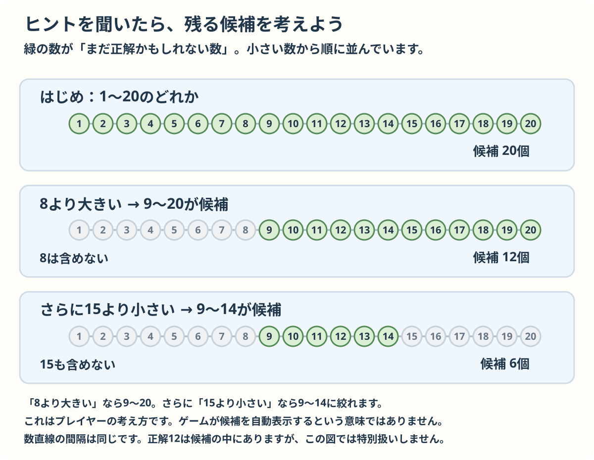

ヒントで数あて
初心者向け
1から20のかくれた数を、ヒントを見ながら5回以内に当てます。
始める前に
ZIPを展開してできたフォルダーでindex.htmlを開きます。ZIPにはひな型の3ファイルが入っています。
WindowsでZIPを展開する（動画）
3つのファイルは同じフォルダーに入っています。
各ステップでは作業用の script.js を開き、示した部分を順番に置き換えます。index.html と style.css は変更しません。保存後、作業用の index.html を開くか再読み込みします。
document.querySelector("#game-canvas") はHTMLのCanvasを選び、getContext("2d") で絵を描く道具を取り出します。start() は最初の設定、update() は更新、draw() は描画です。gameLoop() は requestAnimationFrame で更新と描画を繰り返します。
ステップ 1：数字を入力して表示する
このステップの見本を図で見る

このステップの見本
この行を足す前 変わったコードの一例（script.js）
if (inputText.length < 2) inputText += event.key;
見本で確かめること
数字を打つと表示され、Backspace で最後の1文字が消えます。
保存してゲーム画面を更新する（動画）
index.html を再読み込みします。目標
数字キーで入力し、Backspace で1文字消します。
確認欄までは準備中です。作業を順に進め、確認欄で保存して動作を確かめます。
書く場所と置き換えるコード
入力を覚える変数を用意する
作業用フォルダーの script.js で、次の目印を探し、その直後に書きます。
目印
const ctx = canvas.getContext("2d");
書き足すコード
let inputText;
変数は値に名前を付けて覚えるものです。let で、あとから値を変えられる変数を用意します。inputText は入力された数字の文字を覚えます。
入力を空にして始める
作業用フォルダーの script.js で、次の目印を探し、その直後に書きます。
目印
function start() {
書き足すコード
inputText = "";
= は右の値を左の変数に入れ、; は文の区切りです。"" は空の文字列です。start() で入力を空にします。
案内と入力を表示する
作業用フォルダーの script.js で、次の目印を探し、その直後に書きます。
目印
ctx.clearRect(0, 0, canvas.width, canvas.height);
書き足すコード
ctx.fillStyle = "#26334a";
ctx.font = "28px sans-serif";
ctx.fillText("数字を入力してみよう", 235, 125);
ctx.fillText("入力: " + inputText, 280, 220);
ctx.font = "22px sans-serif";
ctx.fillText("Backspace で1文字消せます", 235, 300);
ctx はひな型で用意した描画の道具です。fillStyle は色、font は文字の大きさと書体を設定します。fillText の後ろの2つの数は文字を描く横と縦の位置です。+ で「入力: 」と入力文字をつなぎます。
ここで保存して作業用の index.html を再読み込みすると、案内と空の入力欄が表示されます。キーの処理は次から作ります。
キー入力を受け取る準備をする
作業用フォルダーの script.js で、次の目印を探し、その直後に書きます。
目印
ctx.fillText("Backspace で1文字消せます", 235, 300);
}
書き足すコード
window.addEventListener("keydown", (event) => {
});
keydown はキーが押されたときに起こります。続けてこの中にキーごとの処理を書きます。
特別な入力を除く
作業用フォルダーの script.js で、次の目印を探し、その直後に書きます。
目印
window.addEventListener("keydown", (event) => {
書き足すコード
if (event.repeat || event.ctrlKey || event.altKey || event.metaKey || event.isComposing) return;
repeat は押しっぱなし、ctrlKey・altKey・metaKey は組み合わせ、isComposing は変換中を表します。|| でどれかに当てはまれば return で処理を終えます。
数字をつなげる
作業用フォルダーの script.js で、次の目印を探し、その直後に書きます。
目印
if (event.repeat || event.ctrlKey || event.altKey || event.metaKey || event.isComposing) return;
書き足すコード
if (event.key >= "0" && event.key <= "9" && event.key.length === 1) {
if (inputText.length < 2) inputText += event.key;
}
event.key は押されたキーです。0〜9の1文字で、入力が2文字未満なら += で末尾に加えます。
最後の文字を消す
作業用フォルダーの script.js で、次の範囲を探して置き換えます。
置き換える範囲
if (event.key >= "0" && event.key <= "9" && event.key.length === 1) {
if (inputText.length < 2) inputText += event.key;
}
置き換えるコード
if (event.key >= "0" && event.key <= "9" && event.key.length === 1) {
if (inputText.length < 2) inputText += event.key;
} else if (event.key === "Backspace") {
event.preventDefault();
inputText = inputText.slice(0, -1);
}
slice(0, -1) は最後の1文字の手前までを取り出します。preventDefault() はキーのブラウザー標準の動作を防ぎます。
保存後の確かめ方
数字を打つと表示され、Backspace で最後の1文字が消えます。 ステップ 1 の見本を開く
小さな練習
入力できる文字数を一時的に1に変えて、違いを確かめます。 練習後はこのステップのコードに戻してください。
ステップ 2：大小を比べてヒントを出す
このステップの見本を図で見る
このステップの見本
ctx.fillText("Backspace で1文字消せます", 235, 300);
変わったコードの一例（script.js）ctx.fillText(hint, 180, 270);
見本で確かめること
8、15、12をそれぞれ入力して Enter を押し、3種類の表示を確かめます。
目標
練習用の正解12と、Enter で入力された数を比べます。
確認欄までは準備中です。作業を順に進め、確認欄で保存して動作を確かめます。
書く場所と置き換えるコード
答えとヒントを覚える
作業用フォルダーの script.js で、次の範囲を探して置き換えます。
置き換える範囲
let inputText;
置き換えるコード
let inputText, answer, hint;
answer は答え、hint は表示する案内を覚えます。
答えと案内を設定する
作業用フォルダーの script.js で、次の目印を探し、その直後に書きます。
目印
inputText = "";
書き足すコード
answer = 12;
hint = "1から20の数を入力して Enter";
この段階では答えを 12 に固定します。hint に最初の案内を入れます。
画面の案内を更新する
作業用フォルダーの script.js で、次の範囲を探して置き換えます。
置き換える範囲
ctx.fillText("数字を入力してみよう", 235, 125);
ctx.fillText("入力: " + inputText, 280, 220);
ctx.font = "22px sans-serif";
ctx.fillText("Backspace で1文字消せます", 235, 300);
置き換えるコード
ctx.fillText("かくれた数を当てよう", 235, 100);
ctx.fillText("入力: " + inputText, 285, 195);
ctx.font = "24px sans-serif";
ctx.fillText(hint, 180, 270);
ctx.fillText("1〜20 / Enter で答える", 225, 315);
ctx.fillText("Backspace で1文字消せます", 225, 350);
hint を描くと、判定によって変わった案内が画面に表示されます。
答えを調べる準備をする
作業用フォルダーの script.js で、次の目印を探し、その直前に書きます。
目印
window.addEventListener書き足すコード
function checkGuess() {
}
checkGuess() は入力された数を調べる関数です。続けて中身を書きます。
空の入力を調べる
作業用フォルダーの script.js で、次の目印を探し、その直後に書きます。
目印
function checkGuess() {
書き足すコード
if (inputText === "") {
hint = "数字を入れてから Enter";
return;
}
=== は左右が等しいかを調べます。空のときは案内を出し、return で処理を終えます。
数に変えて範囲を調べる
作業用フォルダーの script.js で、次の目印を探し、その直後に書きます。
目印
if (inputText === "") {
hint = "数字を入れてから Enter";
return;
}
書き足すコード
const guess = Number(inputText);
if (guess < 1 || guess > 20) {
hint = "1から20の数を入れてね";
return;
}
Number は入力文字を数値に変えます。< は左が小さい、> は左が大きいことを表し、|| はどちらかが成り立つことを表します。
答えと比べる
作業用フォルダーの script.js で、次の目印を探し、その直後に書きます。
目印
const guess = Number(inputText);
if (guess < 1 || guess > 20) {
hint = "1から20の数を入れてね";
return;
}
書き足すコード
if (guess < answer) {
hint = "もっと大きい数だよ";
} else if (guess > answer) {
hint = "もっと小さい数だよ";
} else {
hint = "正解！";
}
inputText = "";
答えより小さいとき、大きいとき、それ以外の順に調べます。それ以外は正解です。最後に入力を空にします。

この図では、説明のため正解が12だと分かるようにしています。8を入力すると「もっと大きい」、15を入力すると「もっと小さい」というヒントになります。12を入力したときは正解です。実際のゲームでは正解は隠れているので、ヒントを頼りに考えましょう。
この段階の answer は練習用の12です。guess < answer と guess > answer を順に調べます。

最初の候補は1から20までです。「8より大きい」と分かったら、次に考える候補は9から20までになります。さらに「15より小さい」と分かったら、候補は9から14までです。このように候補を絞るのは、遊んでいる人の考え方です。
候補を絞るのは遊ぶ人の考え方です。ゲームは hint を表示し、候補一覧は自動で表示しません。
Enter で答えを調べる
作業用フォルダーの script.js で、次の目印を探し、その直後に書きます。
目印
inputText = inputText.slice(0, -1);
書き足すコード
} else if (event.key === "Enter") {
event.preventDefault();
checkGuess();
Enter が押されたら checkGuess() を呼び、ブラウザーの標準動作を preventDefault() で止めます。
保存後の確かめ方
8、15、12をそれぞれ入力して Enter を押し、3種類の表示を確かめます。空欄や21も試します。 ステップ 2 の見本を開く
小さな練習
answer を 10 に変え、別の数で大小を比べます。 練習後はこのステップのコードに戻してください。
ステップ 3：ランダムな数と回数を付ける
このステップの見本を図で見る
5 - 0 = 5
1〜20の整数を入力しよう
21 > 20 → 回数を増やさない
残り5回のまま
5 - 1 = 4
有効な回答で残りが1減る
ゲーム画面とコードの前後を見る
このステップの見本
ctx.fillText(hint, 180, 270);
変わったコードの一例（script.js）ctx.fillText("残り: " + (5 - attempts) + "回", 300, 145);
見本で確かめること
空欄、0、21は回数が減らないことを確かめます。
目標
毎回1から20の数を選び、5回以内に当てるゲームにします。
確認欄までは準備中です。作業を順に進め、確認欄で保存して動作を確かめます。
書く場所と置き換えるコード
回数と状態を覚える
作業用フォルダーの script.js で、次の範囲を探して置き換えます。
置き換える範囲
let inputText, answer, hint;
置き換えるコード
let inputText, answer, hint, attempts, state;
attempts は回答回数、state は遊んでいるか終了したかを覚えます。
答えをランダムに決める
作業用フォルダーの script.js で、次の範囲を探して置き換えます。
置き換える範囲
answer = 12;
置き換えるコード
answer = Math.floor(Math.random() * 20) + 1;
Math.random() は0以上1未満の数を返します。20倍して Math.floor() で切り捨てると0〜19、1を足すと1〜20です。たとえば0.55なら11を経て12になります。
回数と状態を初期化する
作業用フォルダーの script.js で、次の目印を探し、その直後に書きます。
目印
hint = "1から20の数を入力して Enter";
書き足すコード
attempts = 0;
state = "playing";
回数を0にし、状態を "playing" にして始めます。
見出しの位置を変える
作業用フォルダーの script.js で、次の範囲を探して置き換えます。
置き換える範囲
ctx.fillText("かくれた数を当てよう", 235, 100);
ctx.fillText("入力: " + inputText, 285, 195);
置き換えるコード
ctx.fillText("かくれた数を当てよう", 235, 85);
fillText の最後の数が縦の位置です。残り回数を表示する場所を確保します。
残り回数と終了後の案内を表示する
作業用フォルダーの script.js で、次の範囲を探して置き換えます。
置き換える範囲
ctx.fillText(hint, 180, 270);
ctx.fillText("1〜20 / Enter で答える", 225, 315);
ctx.fillText("Backspace で1文字消せます", 225, 350);
置き換えるコード
ctx.fillText("残り: " + (5 - attempts) + "回", 300, 145);
if (state === "playing") {
ctx.fillText("入力: " + inputText, 300, 210);
}
ctx.fillText(hint, 175, 285);
ctx.font = "20px sans-serif";
ctx.fillText("1〜20 / Enter で答える", 225, 325);
ctx.fillText("Backspace で1文字消せます", 225, 355);
if (state !== "playing") ctx.fillText("R キーでもう一度", 275, 410);
5 - attempts は残り回数です。attempts が2なら残り3回です。state === "playing" のときだけ入力を表示し、!== で遊び中以外を調べます。
有効な回答を数える
checkGuess() で範囲外を除く判定の後にある、次の目印の直前に追加します。
目印
if (guess < answer) {書き足すコード
attempts++;
空欄や範囲外は先に処理を終えているため、ここで数えるのは有効な回答だけです。++ は 1 増やします。次の作業で終了条件を加えます。
正解を先に調べる
checkGuess() で大小を調べる最初の行を、次のコードに置き換えます。
置き換える範囲
if (guess < answer) {置き換えるコード
if (guess === answer) {
hint = "正解！ こたえは " + answer;
state = "clear";
} else if (guess < answer) {答えと同じなら正解の案内を表示し、状態を clear にします。この後に残り回数の条件を加えるため、続けて作業します。
5回目の不正解で終了する
正解を調べる分岐の次にある、次の行を置き換えます。
置き換える範囲
} else if (guess < answer) {置き換えるコード
} else if (attempts >= 5) {
hint = "残念！ こたえは " + answer;
state = "over";
} else if (guess < answer) {>= 5 は 5 以上です。正解を先に調べるので、5 回目に当ててもクリアです。最後の分岐も次に整えます。
残りの回答には大小のヒントを出す
checkGuess() の「もっと小さい数だよ」を含む、次の分岐を置き換えます。
置き換える範囲
} else if (guess > answer) {
hint = "もっと小さい数だよ";
} else {
hint = "正解！";
}
置き換えるコード
} else {
hint = "もっと小さい数だよ";
}
正解と 5 回目の不正解は先に判定しました。残った回答は答えより小さいか大きいかに分かれます。
終了後の再挑戦を受け付ける
作業用フォルダーの script.js で、次の目印を探し、その直後に書きます。
目印
if (event.repeat || event.ctrlKey || event.altKey || event.metaKey || event.isComposing) return;
書き足すコード
if (state !== "playing") {
if (event.key.toLowerCase() === "r") start();
return;
}
終了後は R キーで start() を呼び、それ以外の入力は処理しません。動いている gameLoop() は呼び直さず、繰り返しが二重になるのを防ぎます。
保存後の確かめ方
空欄、0、21は回数が減らないことを確かめます。ヒントを使って当て、5回外す場合も試し、R で再挑戦します。 ステップ 3 の見本を開く
小さな練習
5回の制限を4回に変え、表示と判定の両方を変えてみます。 練習後はこのステップのコードに戻してください。